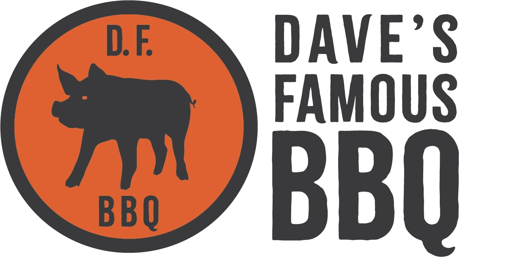
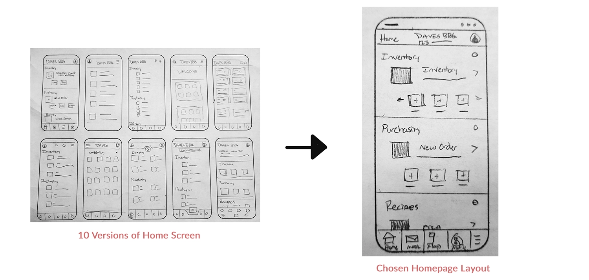
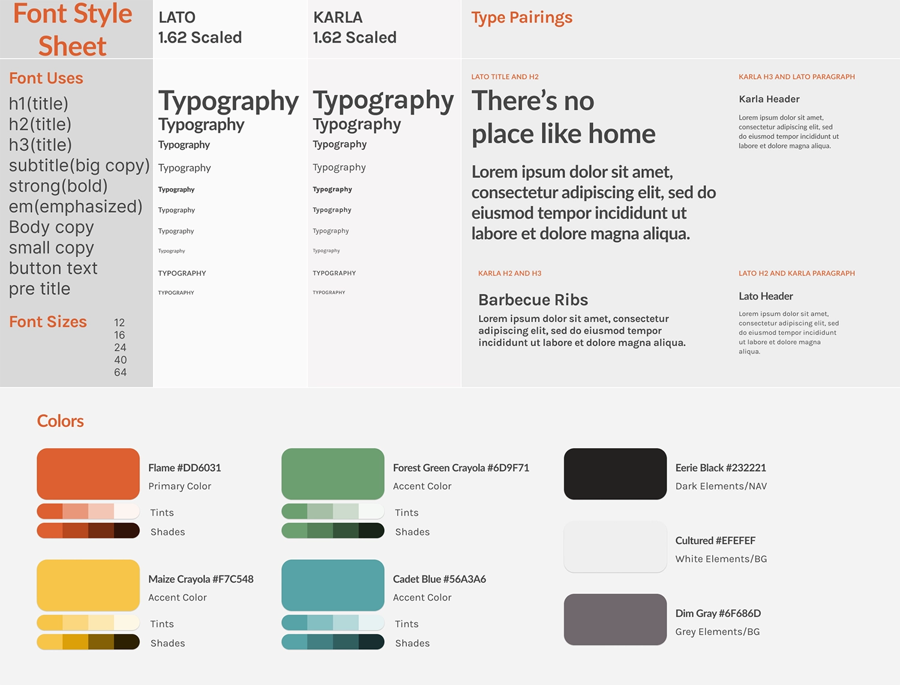

My Role:
- Visual & Interactive Design
- User Research & Competitive Audits
- Wireframing & Prototyping
Client:
- None - Google UX Design Certification
Project Duration:
- Dec 2022 - Feb 2023
Link to FIGMA Prototype:
About:
Dave's Famous BBQ marked my first project during the Google UX Design Certification. Following the course's advice, I employed a project randomizer to simulate a client presenting a problem to the design team. The generated prompt seemed unusual for a BBQ restaurant—an ingredient application. My take on it? Crafting an inventory management system for a BBQ restaurant chain. This choice stemmed from a desire for a challenging design task and drew on my previous experience managing a theater inventory system. The project was exclusively focused on mobile design, allowing me to immerse myself in crafting a phone app without the distraction of a desktop application.
Challenges:
The primary challenges in this project revolved around two key aspects. Firstly, there was the learning curve associated with using Figma's design tools for the first time. Although the Google UX Course provided some guidance on Figma, being a self-taught course meant that advanced features and concepts required additional exploration beyond the introductory video. The second challenge involved the need to refine the project scope. As I delved into creating and linking pages, the enthusiasm to design a comprehensive application led to a project that surpassed the initially intended 4 or 5 pages, a common scope among fellow students.
Step 0. Establishing the Goal
Scroll down to view Dave's BBQ workflow process.
The Google UX certification course employed a project prompt generator, assigning random design projects. What I enjoyed most about being assigned a random problem was the removal of preconceived ideas about solutions. When tasked with a restaurant inventory app, I dove in to understand potential user problems, conducted research, and practiced empathy to address concerns. This approach helped me think of solutions and establish a focused goal for the project.
The Users' Problems:
- Effectively managing inventory across multiple restaurant locations is a challenge.
- In the fast-paced restaurant industry, inventory systems must be streamlined and efficient, enabling swift and effective management.
- Restaurants require a responsive POS system that seamlessly integrates with emerging technologies and can be tailored to their specific needs.
By identifying these three key problems that users were facing, I set out to create a goal for my upcoming design solutions, aiming to better serve their needs.
The Project's Goal:
Given the outlined problems, the goal of this project was to design a mobile application specifically for tracking and managing inventory across multiple restaurant locations. The application's key features include mobile compatibility, providing employees with efficient options for real-time inventory monitoring and editing. Furthermore, this dedicated restaurant application seamlessly integrates with the establishment's existing POS system, offering customization capabilities to suit their unique requirements.
After defining the goal and gaining clarity on what I was designing, I dove into the research phase to tackle that goal. The Google UX course stressed the value of empathy and in-depth user research, underscoring the importance of prioritizing users' needs and requirements over personal assumptions.

Step 1. User Research
Scroll down to continue with research phase.
Background:
At the beginning of my research, I knew the 'what'—I was creating an inventory system for a restaurant. However, I still needed to define the 'who'—the users for whom the product was intended. The Google UX course recommended the creation of personas, which are fictional representations of the customer base, to compare my design solutions to their needs and expectations. In this case, my customers were the employees who needed to use this product to run their business.
To narrow the scope and target a specific customer base, I decided to position the fictional business in Ohio, United States. The intended users of the application were identified as managers and employees from a diverse range of backgrounds, spanning from lower to middle-class, and possessing the necessary educational qualifications for restaurant employment.
During the persona development process, I made certain assumptions based on industry trends and my experience in hospitality. Managers were assumed to be older with some college experience, while employees were considered to be younger, including students pursuing their education or individuals with other aspirations alongside their employment. Additionally, the employee group could include individuals from Spanish-speaking countries, potentially involving lower-skilled labor. Although I have not personally worked in Ohio, these general trends have been observed throughout my years of hospitality experience. After this background research, I then began considering pain points users of this website might encounter
User Research: Pain Points
The next step involved conducting interviews and empathizing with users to identify pain points. With a limited budget, I relied on personal experiences and input from friends in the restaurant industry. This approach provided insights into potential pain points. Building on these, the following insights were generated:
- Efficiency - The application prioritized speed and simplicity to outperform traditional methods, appealing to the desire for convenience among busy employees.
- Redundancy - The mobile app streamlined inventory counts, saving time by integrating counts into the system in real-time and providing immediate updates on over/under counts.
- Accessibility - To address language diversity, the app incorporated language settings and order translation capabilities, improving communication in multilingual restaurant settings.
- Suppliers - The app addressed the pain points in the ordering process and managing multiple suppliers by providing flexibility in organizing stock, connecting with suppliers to streamline orders, or generating printable order forms matching each supplier's format.
With potential pain points identified, I could now create more realistic personas and consider the problems they might encounter while interacting with the application.
Personas and Journey Maps
Creating personas humanized the identified pain points, allowing me, as a designer, to focus on solving the specific problems these personas faced. This approach fostered a stronger connection between my designs and the end users. AI face generators were utilized to generate their photographs, and the initial user research laid the foundation for shaping their backgrounds.
Interestingly, the business name "Dave's Famous BBQ" emerged as I randomly generated the owner's name, David Geer, though I later discovered that this name was already associated with an existing business.
Following the creation of personas, the next step involved developing a user journey map to visualize the sequential steps users would take to perform various functions within the app. The emphasis was on examining each step, identifying potential user frustrations, and generating design solutions to address those concerns. With the personas and their journeys through the product defined, I began the visual design process, starting with wireframes.
Step 2. Starting the Design
Scroll down to view the design process.
Paper Wireframes
Paper wireframes served as a quick initial step, enabling me to explore ideas rapidly before transitioning to Figma for more structured design layouts. During the creation of persona journey maps, paper provided a swift method for sketching my concepts. The main design constraint for the home screen was the necessity for numerous functions in a competitive inventory app. I aimed for a modular system with phone app-like buttons that could expand or contract based on the number of functions or an employee's access level.
With some quick sketches completed, I was finally able to jump into Figma and begin creating digital wireframes.
Digital Wireframe
Above are two examples from the digital wireframes, the left side showcases the home screen, presenting the initial concept of a modular app with app icon-like buttons grouped by category. The larger, darker button represents the most commonly used feature within that category, customizable for convenience. Additional functions are displayed below and can be scrolled as more are added. Multiple navigation options, such as clicking the button, swiping the words next to the icon, or accessing the main menu, offer flexibility for user interaction.
On the right side is the flagging menu, featuring a unique system for employees to quickly identify missing items or flag depleted inventory. Designed for a busy kitchen setting, the system includes large buttons displaying vital information efficiently. Customizable categories and items sorted into multiple categories enhance accessibility and streamline the flagging process. The system envisions use on a wall-mounted tablet in a bustling kitchen environment.
Following the development of digital wireframes, the next step involved linking the application's components using Figma to produce an interactive prototype. This prototype served as a crucial tool for the upcoming user testing phase.
Figma Link: Dave's Famous BBQ Lo-Fi Prototype
The initial prototype for Dave's Famous BBQ comprised several pages, starting from the login screen with the ability to login, signup, or start password retrieval. When the user logs in, they enter the homepage, which allows access to other functions such as profile management, location change, flag setup, inventory counting, product ordering, and recipe checking.
This comprehensive approach, while exceeding the minimum requirement, emphasized the need for refinement, especially in data tables and inventory management processes. The iterative design process aimed to address these areas in subsequent stages of development. An example of this is the process for placing a new order, which I'll highlight below.
Inventory Order Process
The first iteration of the ordering process allowed users to log in, initiate a new order, view the entire inventory, adjust quantities, see a checkout cart organized by supplier, and receive a confirmation. This process was bare bones and highlighted an issue with the scope from my initial designs. Having spent a lot of time designing many pages for the app gave me less individual time for each design solution, and moving step by step through the checkout process, especially tracking a giant inventory table, required more time and attention to succeed.
In any case, the app was functional enough to start seeing how users interacted with it and later underwent further expansion and refinement in subsequent stages. After completing the low-fidelity prototype, I proceeded to conduct usability testing to enhance and refine my designs.
Usability Study: Findings
The Google UX Course highlighted the importance of usability testing, both from ideal scenarios and real-world constraints such as limited budgets and time. Applying practical insights from the course, I conducted remote usability testing using scripts and questions to guide participants through tasks. This approach recorded user interactions, comments, and feedback, informing my future design iterations.
While working on Dave’s BBQ, I conducted two rounds of usability testing. The first round focused on testing the new flagging system I developed and the simpler task of changing the restaurant's location. Insights from this round led to improvements, such as renaming the flagging function to '86 Flags' based on user feedback. Users also expressed a desire for confirmation prompts to ensure they successfully completed their tasks, leading to enhancements in the user flow.
In the second round of usability testing, I continued to assess the flagging system and introduced testing for the ordering process. This phase provided valuable insights into the layout of the flagging item list, color choices for tables, and the navigation of data tables. It led to improvements in the design, including additional steps that allowed users to click on an item, taking them to a screen where they could adjust the quantity. This bypasses the need for the Excel sheet-style data tables the app had before.
Let's transition to the next section, where I incorporate Hi-Fi elements and integrate insights gathered from my usability study.
Step 3. Refining the Design
Scroll down to view the refinement of the design.
Creating a Style Sheet
One of the processes I learned while working with Figma was the easy creation of style and sticker sheets when designing for a project. This was a great way to keep track of the various fonts, sizes, and colors used, not only if you're a designer working alone but, more importantly, when you're working with developers so that everyone is on the same page for what the project looks like.
For Dave's BBQ, I chose the Lato font for its modern, clean appearance that works well at smaller font sizes. I paired it with Karla, another sans-serif font that has a quirky style and complements Lato nicely. I used a standard type scaling of 1.62 (the golden ratio), ranging from 12 pt to 64 pt, providing ample size variation for a mobile app.
In selecting the colors for the app, I initially experimented with variations inspired by BBQ sauce, ketchup, and mustard. However, I ultimately decided on a grilled vibe, opting for a red flame color and a smoky black that resonated well with the theme. I also chose additional colors, including green for positive values, yellow for accents, and blue to make filter tabs stand out. As I considered various design elements, this is where I also crafted a quick logo based on Buffalo Wild Wings, that harmonized with the overall look and color scheme for the project.
With the established theme and created hi-fidelity elements, let's showcase some designs following the second round of usability testing.
Mockups after Usability Testing
The selected slides showcase the evolution of both the 86 Flag page and the Inventory Count page. Initially presented in the lo-fi version, these pages underwent refinement following the both the process of adding my style sheet and a second round of usability testing, driven by the valuable user feedback that improved the user experience.
For the 86 Flag page, incorporating user input resulted in significant enhancements. I expanded the space for listing out inventory, introduced distinct color coding to differentiate alert types, and seamlessly integrated a custom filter menu with the top bar. This redesign proved to be more intuitive for users than the previous version.
Turning to the Inventory Count page, the design underwent a transformation from an Excel sheet-like interface with a quantity buttons to a more user-friendly layout. The updated version features spaced-out inventory counts rows, incorporates images for items, and allows users to enter quantities efficiently by clicking on individual item pages. This redesign streamlines the process, enabling users to swiftly navigate through items and make quantity entries with ease.
Figma Link: Dave's Famous BBQ Hi-Fi Prototype
The polished version of Dave’s Famous BBQ app prototype preserves the structure of the low-fidelity version. Users begin at the login screen, offering options for login, signup, or password retrieval. Upon logging in, they access the homepage, where various functions like profile management, location change, flag setup, inventory counting, product ordering, and recipe checking are available.
The high-fidelity version introduces refined aesthetics with improved fonts, colors, and images. This upgraded design not only enhances visual appeal but also streamlines processes for flagging items out of stock, counting items, and ordering from suppliers.
Impact and What I Learned
Dave’s Famous BBQ was a project I personally enjoyed because I always relish the opportunity to learn new software and add new skills to my toolkit. Being my first Figma project, Dave’s holds a special place for me as it provided a platform to acquire a multitude of new skills. Beyond the technical aspects, working on this project as part of the Google UX course offered profound insights into conducting usability studies and integrating those findings into my design process to enhance overall quality.
Engaging in a sizable design project like Dave’s underscored the importance of maintaining well-organized structures and hierarchies of colors, fonts, styles, and components. This discipline proved invaluable for building and updating pages across various iterations. Unlike past one-time development projects, where organization was crucial but had limited impact if revisiting was not anticipated, Dave’s emphasized the enduring value of a systematic approach.
In the end, this project surpassed my expectations, showcasing my capabilities. It's a project I would eagerly continue working on, especially if presented with a real client and the task of designing an entire inventory management system.
Thanks! You've made it through my entire design process,
Click the arrow button on the right to return to the top of the page, click Portfolio to see my selected works, or click Archives and look through other projects.